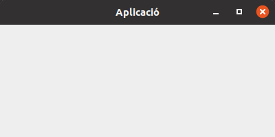

En les aplicacions d'escriptori (mode gràfic), les aplicacions es mostren utilitzant finestres.
La classe per crear-les és JFrame.
S'haurà de configurar la finestra i els elements dins del constructor de la classe.
Per poder utilitzar els mètodes de la finestra (per exemple per accedir als seus elements), caldrà crear un objecte d'aquesta classe i passar aquest objecte a altres objectes que ho necessitin.
class Finestra extends JFrame {
public Finestra() {
// Afegir barra de menús, barra d'eines i altres elements
// Configurar i mostrar finestra
setDefaultCloseOperation(JFrame.EXIT_ON_CLOSE);
setSize(400, 300);
setVisible(true);
}
}
public class Aplicacio {
public static void main(String[] args) {
Finestra f = new Finestra();
}
}
S'haurà de crear un objecte de tipus JFrame i configurar i afegir els elements necessaris.
En aquest cas, els mètodes que gestionin la finestra hauran de ser estàtics i, si són públics, es podran cridar utilitzant el nom de la classe (sense necessitat de tenir l'objecte).
public class Aplicacio {
static JFrame f = new JFrame("Aplicació");
public static void crearFinestra() {
// Afegir barra de menús, barra d'eines i altres elements
// Configurar i mostrar finestra
f.setDefaultCloseOperation(JFrame.EXIT_ON_CLOSE);
f.setSize(400, 300);
f.setVisible(true);
}
public static void main(String[] args) {
crearFinestra();
}
}
